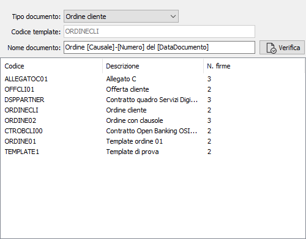
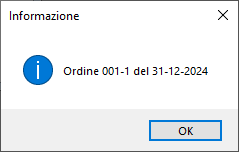

La tabella consente l'assegnazione per ogni tipo documento gestito del template e del nome documento; il campo Template è in sola lettura e si compila selezionando con il doppio clic del mouse uno tra quelli mostrati nella griglia, i modelli mostrati sono quelli precedentemente caricati all'interno del portale di Firma remota.
Il campo nome documento è utilizzato come riferimento al documento nella mail che viene inviata ai firmatari. Per la composizione di questo campo è possibile usare i seguenti tag:
[Anno]: che viene sostituito con l'anno del documento
[Serie]: che viene sostituito con la serie del documento
[Numero]: che viene sostituito con il numero del documento
[DataDocumento]: che viene sostituito con la data del documento
[Causale]: che viene sostituito con il codice causale del documento
Il bottone Verifica mostra in una finestra come realmente comparirà il nome del documento all'interno della mail.
